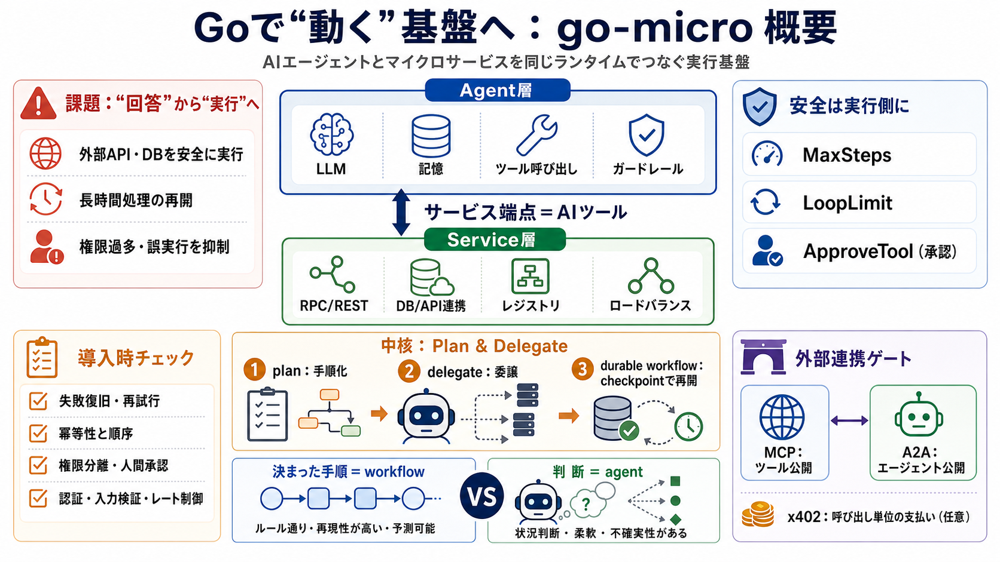

How to x402: The Complete Guide to the AI Agent Payment ...
# How to x402: The Complete Guide to the AI Agent Payment Protocol . When a browser or app calls a website, the server …

# How to x402: The Complete Guide to the AI Agent Payment Protocol . When a browser or app calls a website, the server …
Learn how Google, Visa, Mastercard & Coinbase X402 enable AI agents to make secure payments. Complete guide to implement…
# micro/go-micro. Go Micro is an **agent harness** and service framework for Go. A harness is the runtime around an agen…
AI Agents Can Now Pay for Things — Here's How (x402 Explained) What The Func? w/ Ed Zynda 11000 subscribers 150 likes 45…
An Agent Harness for Go. Build agents, services, and workflows on one runtime. Go Micro — an agent orchestrating service…